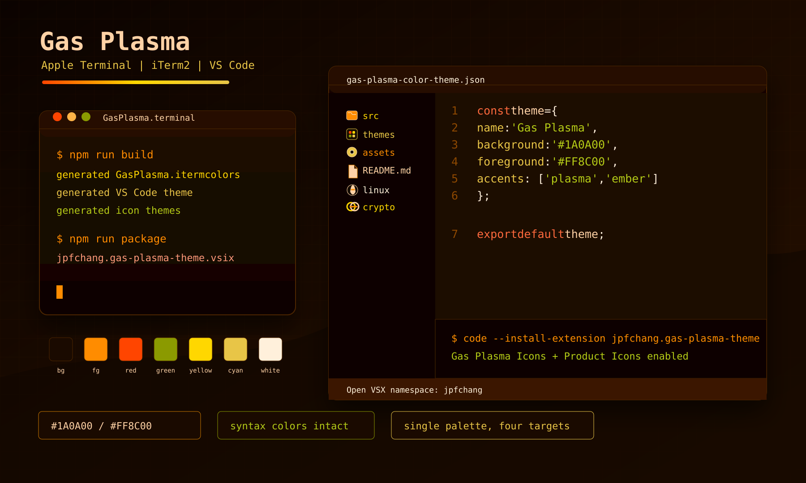

Apple Terminal
Download GasPlasma.terminal from the latest GitHub release and open it in Terminal.
An orange-dominant dark theme inspired by ionized gas glow. Built for Apple Terminal, iTerm2, VS Code, and Open VSX-compatible editors.

Download GasPlasma.terminal from the latest GitHub release and open it in Terminal.
Import GasPlasma.itermcolors from iTerm2 Profiles color presets.
Install the VSIX from GitHub Releases or search Open VSX for johnthre.gas-plasma-theme.